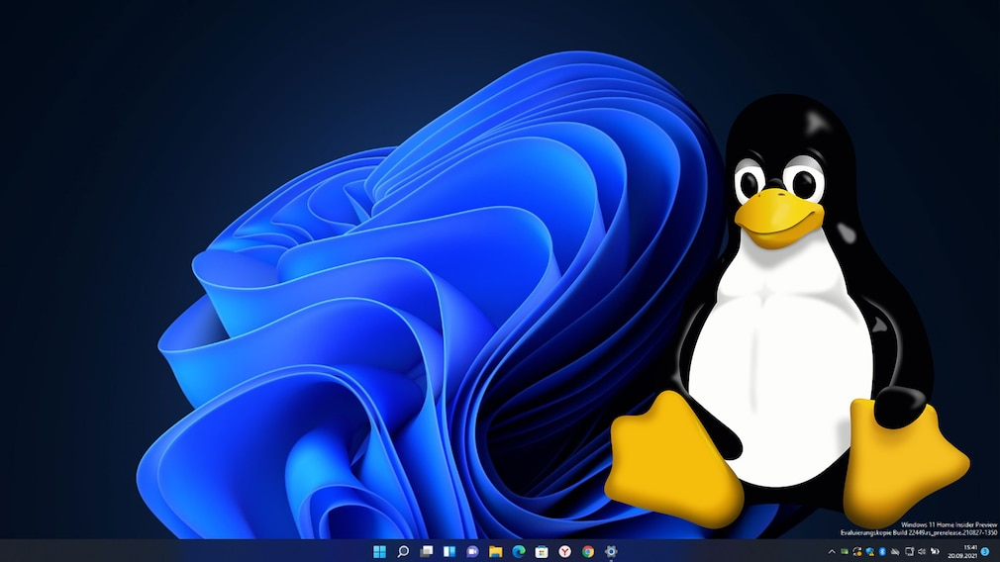

Hampir 2 tahun yang lalu saya memutuskan untuk berpindah dari Windows ke sistem operasi berbasis Linux seperti Ubuntu atau Manjaro. Keputusan ini didasari karena kondisi device yang tidak memungkinkan untuk digunakan sebagai daily driver karena keterbatasan spesifikasi device. Usia device yang hampir mencapai masa layannya disertai keterbatasan dalam pilihan upgrade bagian device menjadi alasan utama, di lain sisi harga lisensi Windows 10 yang termasuk tidak murah ikut menjadi bahan pertimbangan kala itu. Setelah mencari beberapa solusi, akhirnya saya memutuskan untuk berpindah ke sistem operasi berbasis Linux karena dapat dijalankan pada device dengan spesifikasi low-end serta lisensi yang bersifat free dan open source. Selama menggunakan Linux berbagai pengalaman sudah saya alami mulai dari adaptasi sistem folder yang berbeda dengan Windows, pembiasaan menggunakan Command Line Interface (CLI), troubleshooting jika terjadi masalah hingga nge-custom tampilan distro yang saya gunakan agar terlihat lebih menarik dan nyaman untuk dipakai. Sebagai daily driver, Linux mampu memenuhi hampir seluruh kebutuhan saya sebagai mahasiswa kala itu. Ketersediaan alternatif aplikasi untuk kebutuhan pengolahan dokumen seperti Libreoffice cukup membantu dalam menyelesaikan tugas-tugas perkuliahan. Compatible terhadap berbagai bahasa pemrograman menjadi kelebihan tersendiri yang turut memudahkan aktivitas saya selama mengerjakan tugas tertentu. Selain itu ada beberapa alasan lainnya Linux cocok digunakan sebagai daily driver, di antaranya:
Free and Open Source. Sistem operasi berbasi Linux termasuk ke dalam Free and Open Source Software di mana pengguna dapat bebas menggunakan perangkat lunak tersebut sesuai kebutuhan dan tujuan apapun serta source code yang terbuka untuk umum sehingga dapat diakses oleh banyak orang. Kelebihan dari perangkat lunak yang termasuk ke dalam ini adalah pengguna dapat dengan bebas menggunakan, belajar, memodifikasi source code sesuai kebutuhan pengguna serta mendistribusikan kembali perangkat lunak tersebut terlepas dari adanya aktivitas modifikasi atau tidak. Selain itu, sifatnya yang terbuka untuk umum menjadikan perangkat lunak tersebut memiliki tingkat keamanan yang tinggi dibanding perangkat lunak milik individu (proprietary software) karena tidak dapat menyembunyikan fitur tertentu di dalam source code-nya. Di samping itu, kehadiran open source mengundang banyak software developer yang tertarik untuk mengembangkan software tersebut menjadi lebih baik lagi (Boval, 2019).
Dapat dijalankan pada device dengan spesifikasi low-end. Permasalahan spesifikasi device yang tidak mencukupi untuk menjalankan sistem operasi Windows 10 menyebabkan banyak device lama (umur 5 - 10 tahun) tidak mampu menjalankannya. Hal ini menjadi dilema tersendiri bagi pengguna laptop atau komputer lama antara membeli perangkat baru atau upgarding beberapa bagian pada device mereka. Berbeda dengan Windows, sistem operasi berbasis Linux mampu dijalankan pada perangkat lama karena sebagian developer telah memodifikasi OS ini agar dapat dijalankan pada perangkat dengan spesifikasi low-end. OS berbasis Linux yang banyak beredar saat ini berada dalam bentuk distro, di mana sekelompok developer memodifikasi source code awal untuk disesuaikan dengan kebutuhanan mereka. Salah satu distro yang dapat dijalankan pada device lama adalah Xubuntu, Lubuntu, Zorin OS Lite, Arch Linux, BunshenLabs Linux Lithium, dan Puppy Linux (Cawley, 2022).
Compatible untuk programming. Secara umum Linux mendukung banyak bahasa pemrograman (Python, C++, C, R, dll.) sehingga cocok digunakan untuk programming. Selain itu, fitur package manager (pacman dan apt) pada Linux memberikan kemudahan bagi pengguna jika ingin meng-install suatu aplikasi melalui terminal. Kehadiran software pendukung programming seperti curl dan git. juga menjadi kelebihan tersendiri pada Linux–mengingat kemudahan yang ditawarkan dalam proses instalasi dibanding sistem operasi lainnya jika software tersebut tidak terpasang pada perangkat. Terminal pada Linux juga memiliki fitur automasi berupa bash scripting yang merupakan sebuah script berisi kumpulan perintah untuk menjalankan suatu tugas. Terminal bawaan pada Windows (PowerShell atau Command Prompt) tidak memiliki keefektifan automasi seperti terminal pada Linux sehingga perlu instalasi software tertentu (emulator atau WSL).
Highly customable. Linux dapat di-custom sesuai kebutuhan dan keinginan penggunanya mulai dari penyesuaian tampilan seperti penggantian theme, icons, wallpaper dan aplikasi pendukung lainnya hingga mendesain sistem operasi tersebut untuk tujuan tertentu seperi lightweight distribution (Xubuntu dan Lubuntu) agar dapat dijalankan pada perangkat lama.
Memiliki kontrol penuh terhadap sistem operasi. Pengguna Linux dapat juga bertindak sebagai admin bagi sistem operasinya di mana pengguna diberikan kontrol penuh terhadap perangkat yang dia jalankan. Salah satu contohnya adalah pengguna dapat menghapus aplikasi bawaan yang sekiranya tidak berguna. Hal ini akan memberikan ruang penyimpanan lebih besar bagi device terutama yang memiliki spesifikasi low-end.
Referensi
Reuse
Sitasi
@online{mulyamuhammadsyah2022,
author = {Pandu Mulya Muhammad Syah},
title = {5 Alasan Menggunakan Linux Sebagai Daily Driver},
date = {2022-04-08},
langid = {id}
}